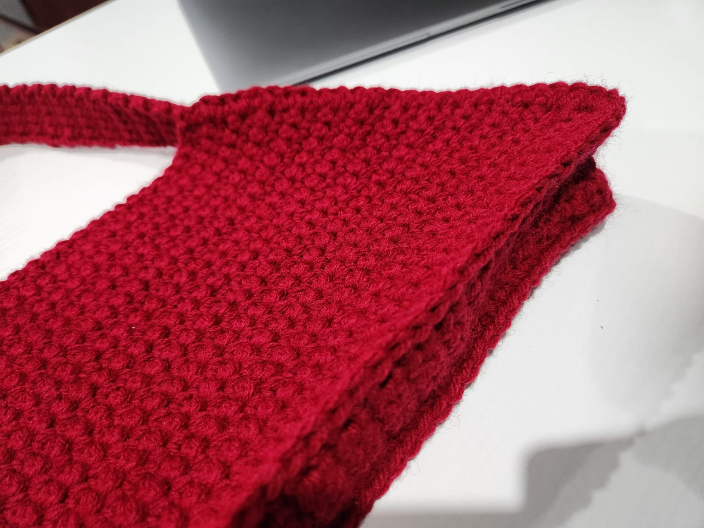
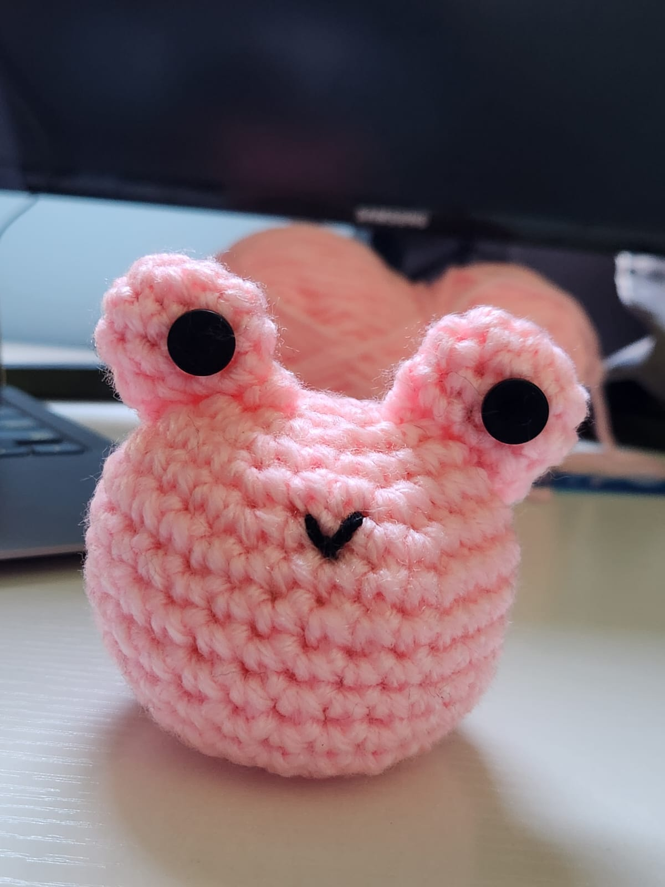
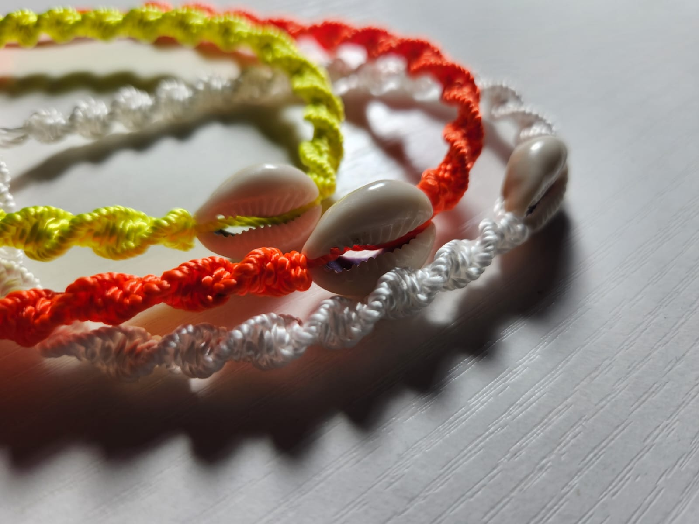
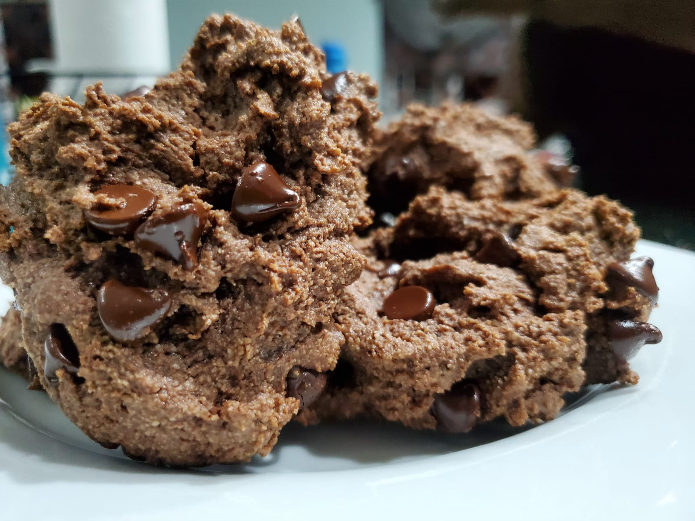
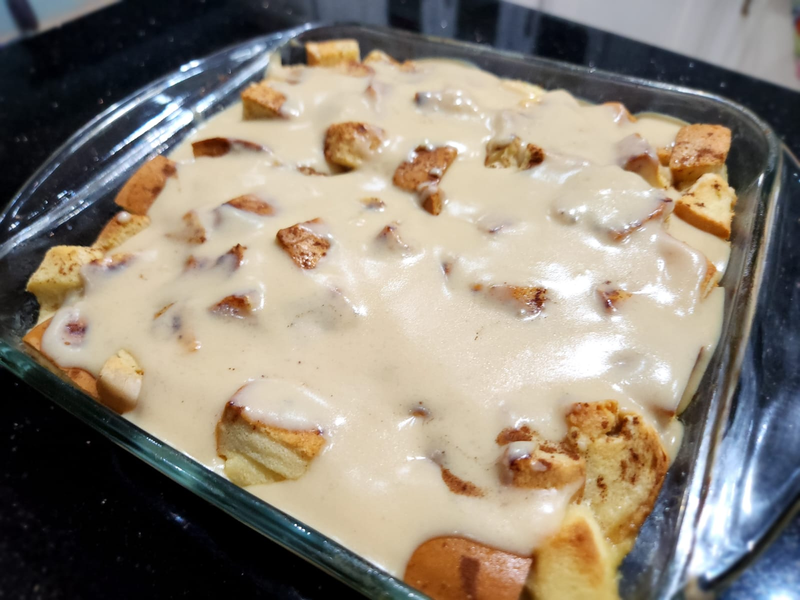

While I'm passionate about software development, my creativity extends beyond the digital world. In my free time, I enjoy
crocheting
photography
baking
macrame
Getting lost in fictional novels and poetry
These hobbies provide a balance between logic and creativity, allowing me to express myself in different ways.
Want to see more of what I love? Explore my hobbies below!
Hobbies





Favourite Books
Never Lie by Freida McFadden - This book was very captivating. It is about a couple that discovers chilling secrets
in a psychiatrist's abandoned home during a snowstorm. The plot twist blew my mind.
Milk and Honey by Rupi Kaur - One of my favourite reads. It is a poetic journey through love, loss, trauma, healing, and femininity.
Home Body by Rupi Kaur - I am in love with this poet. This book also deserves a read. Introspective poetry on self-love, growth, identity, and healing from past wounds.
What Lies Between Us by John Marrs - Another interesting read. A mother and daughter's dark secrets lead to a deadly psychological battle.
The Word is Murder by Anthony Horowitz - A detective investigates a woman's murder—hours after she plans her own funeral.